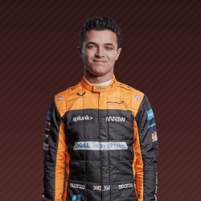
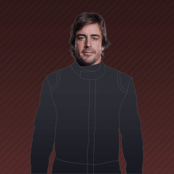
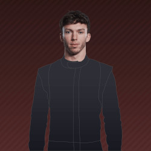

- In Formula 1 since: Since the beginning
- Season Finish: 2nd
- Drivers
- Website

- In Formula 1 since: 2005-
- Season Finish: 1st
- Drivers
- Website
- In Formula 1 since: 2010-
- Season Finish: 3rd
- Drivers
- Website
- In Formula 1 since: 1966-
- Season Finish: 5th
- Drivers
- Lando Norris 
- Daniel Ricciardo
- Website
- In Formula 1 since: 1977-1985, 2002-2011, 2016-
- Season Finish: 4th
- Drivers
- Fernando Alonso 
- Esteban Ocon
- Website
- In Formula 1 since: 1950-1951, 1979-1985, 2018-
- Season Finish: 6th
- Drivers
- Website
- In Formula 1 since: 2019-
- Season Finish: 7th
- Drivers
- Website
- In Formula 1 since: 2015-
- Season Finish: 8th
- Drivers
- Website
- In Formula 1 since: 2015-
- Season Finish: 9th
- Drivers
- Pierre Gasly 
- Yuki Tsunoda
- Website
- In Formula 1 since: 1977
- Season Finish: 10th
- Drivers
- Website